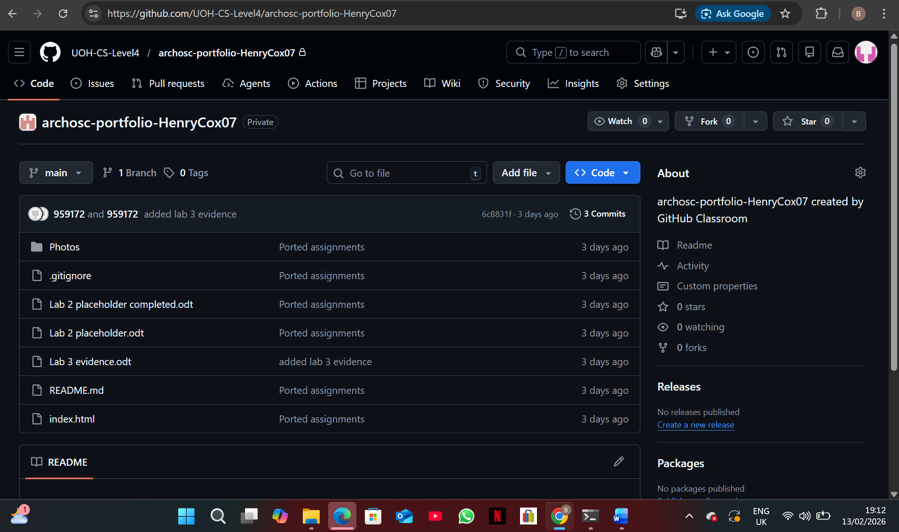
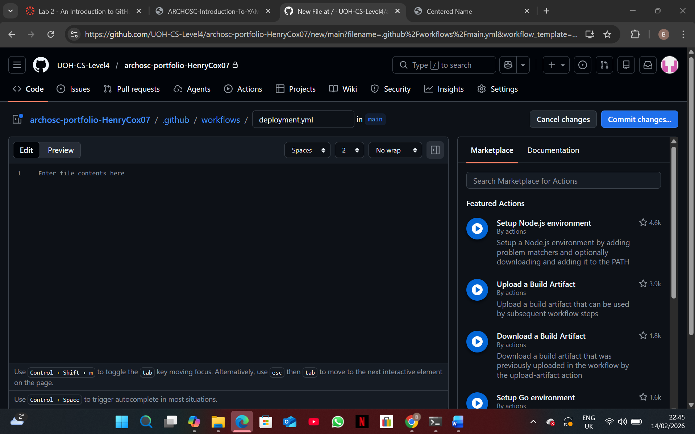
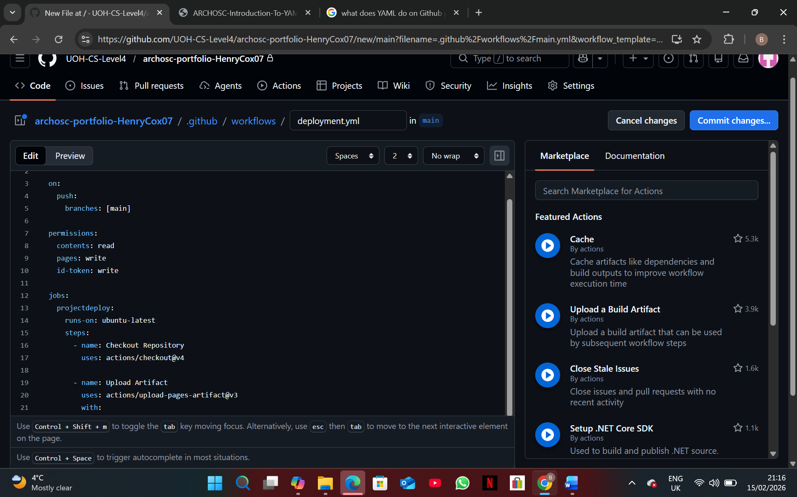

Task 1: For the first task in this lab I was required to take the work that I had produced last week from its repository on Github and make a new one for this lab. I did this by pulling the contents from github onto my local repo, creating an old assignment and new assignment folder. I moved the contents in the cloned repo into the old assignment folder before copying it into the new assignment folder. Once I did this, I pushed the folder into the new Github repo I had been provided.

Task 2: For task 2 I had to create a new workflow; the way that I did this was by republishing my website in the new repository altering the pages setting from deploy from a branch to Github actions which produced the actions button. From there I navigated to the actions page clicked produce new workflow and was brought to this page where I changed the name of the workflow from main.yml to deployment.yaml.

Task 3: The third task required me to produce the YAML code for my website that will allow me to automate deployments using GitHub Actions. To do this I edited the deployment.yaml file and added the required workflow code. The YAML file controls what actions GitHub should perform whenever changes are pushed to the online repo and in this case it was configured to automatically deploy my portfolio website to GitHub Pages whenever updates were made to the main branch. This saves me a lot of time as I will not have to reupload the website each time I make a change to the website.
